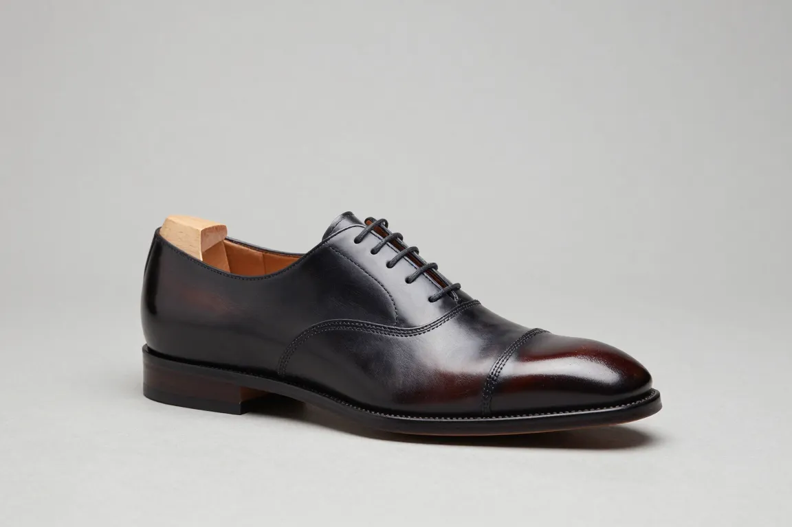

The lace-up dress shoe of the English gentleman. It is a closed-lacing Oxford or an open-lacing Derby in polished calf, sewn to a leather sole with a welt that a cobbler can replace.

Core thesis
A dress shoe lasts decades when its sole is welted and the upper is fine calf, so the shoe is a quiet sign of care.
Design principles
Stitch the leather sole to the upper through a welt, so that a cobbler can resole it four to six times.
Close the throat of an Oxford with a lace tab that is sewn under the vamp.
Keep the toe round or slightly chiselled, and the toe cap plain.
Cut the heel stack at 2.5 cm and the waist of the sole narrow and close.
Burnish the toe and the heel to a dark shine in two coats of polish.
Use 5 to 6 pairs of eyelets, with a flat waxed lace.
Choose a last with a quiet shape: no sharp toe, no square toe.